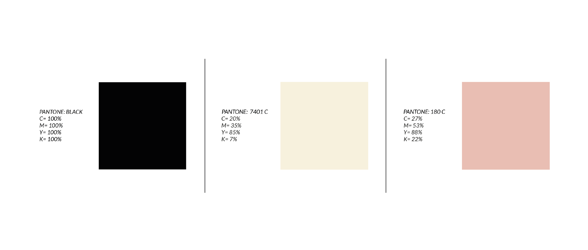

Paleta Cromática
En cuanto a la croma, se opto por colores neutros y elegantes que hacen alusión al personaje escogido, Edna Moda. Más alla de su aparición en una película de superheroes, es una señora sumamente elegante, de buen porte y seria, por lo tanto, los colores van en sintonía con su personalidad. En la Landing Page se buscó reflejar lo mismo que en la página web de moda.
